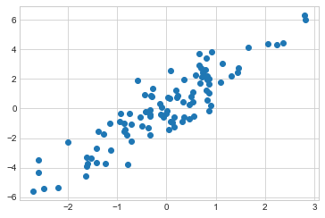
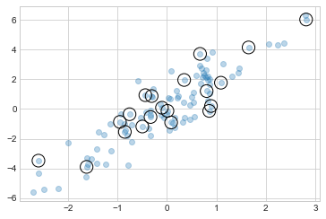
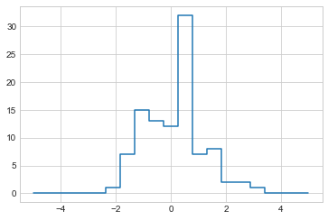

import numpy as np
rng = np.random.default_rng(seed=1701)
x = rng.integers(100, size=10)
print(x)[90 40 9 30 80 67 39 15 33 79]이전 장에서는 간단한 인덱스(예: arr[0]), 슬라이스(예: arr[:5]) 및 불리언 마스크(예: arr[arr > 0])를 사용하여 배열의 일부에 액세스하고 수정하는 방법을 논의했습니다. 이번 장에서는 단일 스칼라 대신 인덱스 배열을 전달하는 팬시 또는 벡터화된 인덱싱으로 알려진 또 다른 배열 인덱싱 스타일을 살펴보겠습니다. 이를 통해 배열 값의 복잡한 하위 집합에 매우 빠르게 액세스하고 수정합니다.
팬시 인덱싱은 개념적으로 간단합니다. 이는 여러 배열 요소에 동시에 액세스하기 위해 인덱스 배열을 전달하는 것을 의미합니다. 예를 들어 다음 배열을 살펴보겠습니다.
import numpy as np
rng = np.random.default_rng(seed=1701)
x = rng.integers(100, size=10)
print(x)[90 40 9 30 80 67 39 15 33 79]세 가지 다른 요소에 액세스한다고 가정해 봅시다. 우리는 다음과 같이 합니다:
[x[3], x[7], x[2]][30, 15, 9]또는 단일 목록이나 인덱스 배열을 전달하여 동일한 결과를 가능합니다.
ind = [3, 7, 4]
x[ind]array([30, 15, 80])인덱스 배열을 사용할 때 결과의 모양은 인덱싱되는 배열의 모양이 아니라 인덱스 배열의 모양을 따릅니다.
ind = np.array([[3, 7],
[4, 5]])
x[ind]array([[30, 15],
[80, 67]])팬시 인덱싱은 여러 차원에서도 작동하는 것을 볼 수 있습니다. 다음 배열을 살펴보겠습니다.
X = np.arange(12).reshape((3, 4))
Xarray([[ 0, 1, 2, 3],
[ 4, 5, 6, 7],
[ 8, 9, 10, 11]])표준 인덱싱과 마찬가지로 첫 번째 인덱스는 행을 참조하고 두 번째 인덱스는 열을 참조합니다.
row = np.array([0, 1, 2])
col = np.array([2, 1, 3])
X[row, col]array([ 2, 5, 11])결과의 첫 번째 값은 X[0, 2]이고, 두 번째 값은 X[1, 1], 세 번째 값은 X[2, 3]입니다. 팬시 인덱싱의 인덱스 쌍은 배열 계산: 브로드캐스팅에서 언급된 모든 브로드캐스팅 규칙을 따릅니다. 예를 들어 인덱스 내에서 열 벡터와 행 벡터를 함께 사용하면 2차원 결과를 얻습니다.
X[row[:, np.newaxis], col]array([[ 2, 1, 3],
[ 6, 5, 7],
[10, 9, 11]])여기서 각 행 값은 산술 연산 브로드캐스팅에서 본 것과 똑같이 각 열 벡터와 일치합니다. 예를 들어:
row[:, np.newaxis] * colarray([[0, 0, 0],
[2, 1, 3],
[4, 2, 6]])반환 값은 인덱싱되는 배열의 모양이 아니라 인덱스의 브로드캐스트 모양을 따른다는 사실을 팬시 인덱싱과 함께 늘 유의해야 합니다.
더욱 강력한 작업을 위해 팬시 인덱싱을 지금까지 본 다른 인덱싱 방식과 조합합니다. 예를 들어 배열 ’X’가 있다고 가정해 봅시다.
print(X)[[ 0 1 2 3]
[ 4 5 6 7]
[ 8 9 10 11]]멋진 인덱스와 간단한 인덱스를 결합합니다.
X[2, [2, 0, 1]]array([10, 8, 9])팬시 인덱싱과 슬라이싱을 결합할 수도 있습니다.
X[1:, [2, 0, 1]]array([[ 6, 4, 5],
[10, 8, 9]])그리고 팬시 인덱싱과 마스킹을 결합합니다.
mask = np.array([True, False, True, False])
X[row[:, np.newaxis], mask]array([[ 0, 2],
[ 4, 6],
[ 8, 10]])이러한 모든 인덱싱 옵션을 함께 사용하면 배열 값에 효율적으로 액세스하고 수정하기 위한 매우 유연한 작업 환경이 갖춰집니다.
팬시 인덱싱의 일반적인 용도 중 하나는 행렬에서 행의 일부를 추출하는 용도입니다. 예를 들어 \(D\) 차원의 \(N\) 점을 의미하는 \(N\) x \(D\) 행렬이 있습니다. 예를 들어 2차원 정규 분포에서 가져온 다음 점과 같습니다.
mean = [0, 0]
cov = [[1, 2],
[2, 5]]
X = rng.multivariate_normal(mean, cov, 100)
X.shape(100, 2)Matplotlib 소개에서 논의할 플로팅 도구를 사용하여 이러한 점을 산점도로 확인합니다(다음 그림 참조).
%matplotlib inline
import matplotlib.pyplot as plt
plt.style.use('seaborn-whitegrid')
plt.scatter(X[:, 0], X[:, 1]);
팬시 인덱싱을 사용하여 무작위로 20개의 점을 선택해 보겠습니다. 먼저 중복 없이 20개의 무작위 인덱스를 선택하고 이 인덱스를 사용하여 원본 배열의 일부를 선택하여 이를 수행합니다.
indices = np.random.choice(X.shape[0], 20, replace=False)
indicesarray([82, 84, 10, 55, 14, 33, 4, 16, 34, 92, 99, 64, 8, 76, 68, 18, 59,
80, 87, 90])selection = X[indices] # fancy indexing here
selection.shape(20, 2)이제 어떤 점이 선택되었는지 확인하기 위해 선택한 점의 위치에 큰 원을 겹쳐서 나타내 보겠습니다(다음 그림 참조).
plt.scatter(X[:, 0], X[:, 1], alpha=0.3)
plt.scatter(selection[:, 0], selection[:, 1],
facecolor='none', edgecolor='black', s=200);
이러한 종류의 전략은 통계 모델 검증용 학습/테스트 분할(하이퍼파라미터 및 모델 검증 참조)과 통계 질문에 답하기 위한 샘플링 접근 방식에 필수적인 작업처럼 데이터 세트를 빠르게 분할하는 데 사용됩니다.
고급 인덱싱을 사용하여 배열의 일부에 액세스할 수 있는 것처럼 배열의 일부를 수정하는 데에도 사용합니다. 예를 들어 인덱스 배열이 있고 배열의 해당 항목을 어떤 값으로 설정하고 싶다고 가정해 봅시다.
x = np.arange(10)
i = np.array([2, 1, 8, 4])
x[i] = 99
print(x)[ 0 99 99 3 99 5 6 7 99 9]이를 위해 할당 연산자를 사용합니다. 예를 들어:
x[i] -= 10
print(x)[ 0 89 89 3 89 5 6 7 89 9]그러나 이러한 작업으로 인덱스를 중복 사용하면 간혹 예상치 못한 결과가 발생합니다. 다음을 고려하십시오.
x = np.zeros(10)
x[[0, 0]] = [4, 6]
print(x)[6. 0. 0. 0. 0. 0. 0. 0. 0. 0.]4개는 어떻게 된 걸까요? 이 연산은 먼저 x[0] = 4를 할당한 뒤 x[0] = 6을 할당합니다. 물론 결과적으로 x[0]에는 값 6이 포함됩니다.
일견 타당해 보이지만 다음 작업을 살펴보겠습니다.
i = [2, 3, 3, 4, 4, 4]
x[i] += 1
xarray([6., 0., 1., 1., 1., 0., 0., 0., 0., 0.])x[3]에는 값 2가 포함되고 x[4]에는 값 3이 포함될 것으로 생각하기 쉽습니다. 이는 각 인덱스가 반복되는 횟수이기 때문입니다. 왜 그렇지 않습니까? 개념적으로 x[i] += 1은 x[i] = x[i] + 1의 약칭을 의미하기 때문입니다. x[i] + 1이 평가된 다음 결과가 x의 인덱스에 할당됩니다. 이를 염두에 두고 여러 번 발생하는 증강이 아니라 다소 다소 의아한 결과로 이어지는 할당입니다.
그렇다면 작업이 반복되는 다른 동작을 원한다면 어떻게 해야 할까요? 이를 위해 ufuncs의 at 메소드를 사용하고 다음을 수행합니다:
x = np.zeros(10)
np.add.at(x, i, 1)
print(x)[0. 0. 1. 2. 3. 0. 0. 0. 0. 0.]at 메소드는 지정된 값(여기에서는 1)을 사용하여 지정된 인덱스(여기에서는 i)에서 지정된 연산자를 적용해 줍니다. 개념적으로 비슷한 또 다른 방법은 ufuncs의 reduceat 방법으로, NumPy 문서에서 읽을 수 있습니다.
이러한 아이디어를 사용하여 데이터에 대한 사용자 정의 비닝 계산을 효율적으로 수행합니다. 예를 들어 100개의 값이 있고 해당 값이 Bin 배열 내에서 어느 구간에 포함되는지 빠르게 찾고 싶다고 가정해 봅시다. 다음과 같이 ufunc.at을 사용하여 이를 계산합니다.
rng = np.random.default_rng(seed=1701)
x = rng.normal(size=100)
# compute a histogram by hand
bins = np.linspace(-5, 5, 20)
counts = np.zeros_like(bins)
# find the appropriate bin for each x
i = np.searchsorted(bins, x)
# add 1 to each of these bins
np.add.at(counts, i, 1)이제 개수는 각 저장소 내의 포인트 수, 즉 히스토그램을 나타냅니다(다음 그림 참조).
# plot the results
plt.plot(bins, counts, drawstyle='steps');
물론 히스토그램을 그릴 때마다 이 작업을 수행해야 하는 것은 불편할 것입니다. 이것이 Matplotlib가 한 줄로 동일한 작업을 수행하는 plt.hist 루틴을 제공하는 이유입니다.
``파이썬 plt.hist(x, bins, histtype=‘단계’); ````
이 기능은 방금 표시된 것과 유사한 플롯을 생성합니다. 비닝을 계산하기 위해 Matplotlib는 이전에 수행한 것과 매우 유사한 계산을 수행하는 ‘np.histogram’ 함수를 사용합니다. 여기서 두 가지를 비교해 보겠습니다.
print(f"NumPy histogram ({len(x)} points):")
%timeit counts, edges = np.histogram(x, bins)
print(f"Custom histogram ({len(x)} points):")
%timeit np.add.at(counts, np.searchsorted(bins, x), 1)NumPy histogram (100 points):
33.8 µs ± 311 ns per loop (mean ± std. dev. of 7 runs, 10000 loops each)
Custom histogram (100 points):
17.6 µs ± 113 ns per loop (mean ± std. dev. of 7 runs, 100000 loops each)우리의 한 줄 알고리즘은 NumPy의 최적화된 알고리즘보다 두 배나 빠르네요! 어떻게 가능할까요? np.histogram 소스 코드를 확인해 보면(IPython에서 np.histogram??을 입력하여 이 작업을 수행할 수 있음), 우리가 수행한 간단한 검색 및 계산보다 상당히 복잡하게 확인합니다. 이는 NumPy의 알고리즘이 더 유연하며, 데이터 포인트 수가 커질 때 더 나은 성능을 발휘하도록 설계되었기 때문입니다.
x = rng.normal(size=1000000)
print(f"NumPy histogram ({len(x)} points):")
%timeit counts, edges = np.histogram(x, bins)
print(f"Custom histogram ({len(x)} points):")
%timeit np.add.at(counts, np.searchsorted(bins, x), 1)NumPy histogram (1000000 points):
84.4 ms ± 2.82 ms per loop (mean ± std. dev. of 7 runs, 10 loops each)
Custom histogram (1000000 points):
128 ms ± 2.04 ms per loop (mean ± std. dev. of 7 runs, 10 loops each)이 비교가 보여주는 것은 알고리즘 효율성이 결코 단순한 질문이 아니라는 것입니다. 대규모 데이터 세트에 효율적인 알고리즘이 항상 작은 데이터 세트에 최선의 선택은 아니며 그 반대도 마찬가지입니다(Big-O 표기법 참조). 하지만 이 알고리즘을 직접 코딩하는 것의 장점은 이러한 기본 방법을 이해하면 무궁무진하다는 점입니다. 더 이상 내장된 루틴에 국한되지 않고 데이터 탐색에 대한 자신만의 접근 방식을 만들 수 있습니다. 데이터 집약적인 애플리케이션에서 파이썬(Python)을 효율적으로 사용하는 열쇠는 np.histogram과 같은 일반적인 편의 루틴과 그것이 적절히 활용하는 법은 물론, 보다 명확한 동작이 필요할 때 하위 수준 기능을 사용하는 방법을 아는 것입니다.